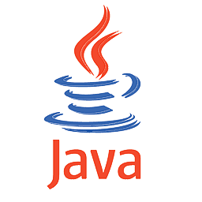

Lenguaje de Programación
|
Usos
|
Salario
|
Icono
|
|
Python
|
Posee una gran versatilidad para
prácticamente todos los sectores de la
industria (robótica, vehículos autónomos,
machine learning, ciencia de datos, astronomía,
neurociencia, farmacología, bioinformática,
etc.)
|
€ 32.368
|
click aquí

|
|
Java
|
Su ámbito de aplicación es muy
amplio, por lo que permite crear software para
dispositivos móviles, terminales de venta, IoT,
además de páginas web.
|
€ 31.000
|
click aquí

|
|
C#
|
Fue creado por Microsoft,
tiene
también usos muy versátiles como el IoT,
desarrollo de videojuegos, web o
aplicaciones
móviles.
|
€ 30.000
|
click aquí

|
|
C++
|
Proporciona STL (biblioteca
de plantillas estándar), es decir, un
conjunto
de bibliotecas listas para usar para
diferentes
estructuras de datos, operaciones
aritméticas y
algoritmos.
El soporte de estas bibliotecas y la
velocidad del lenguaje lo convierten en una
opción muy
popular entre la comunidad comercial de HFT
(High Frecuency Trading).
|
€ 28.000
|
click aquí

|
|
JavaScript
|
Uno de los lenguajes de
programación más usados para crear páginas
web dinámicas. Permite a los programadores
implementar
funciones complejas en las páginas web para
añadirles más interactividad.
|
25.000 euros
|
click aquí
|